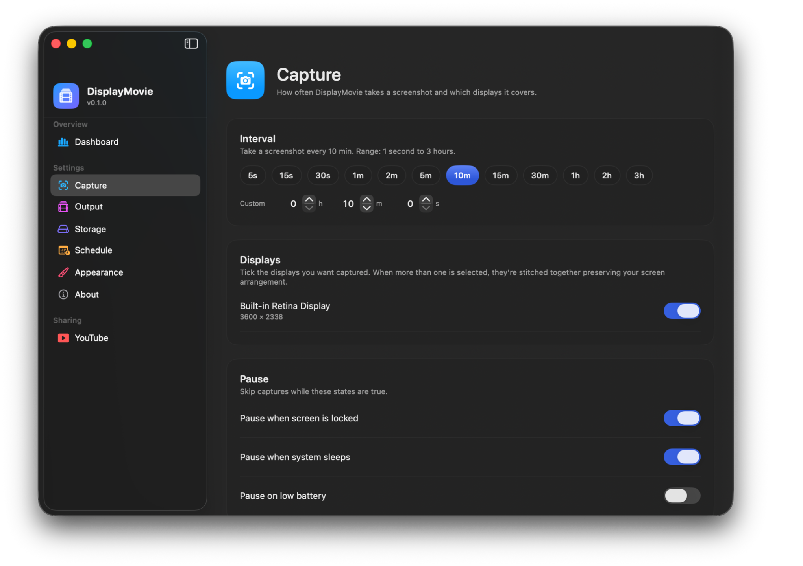
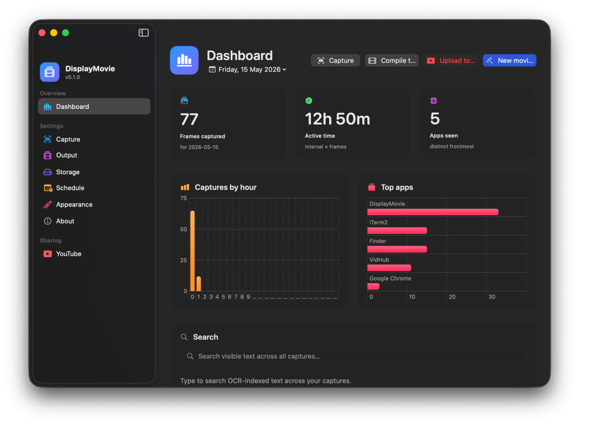
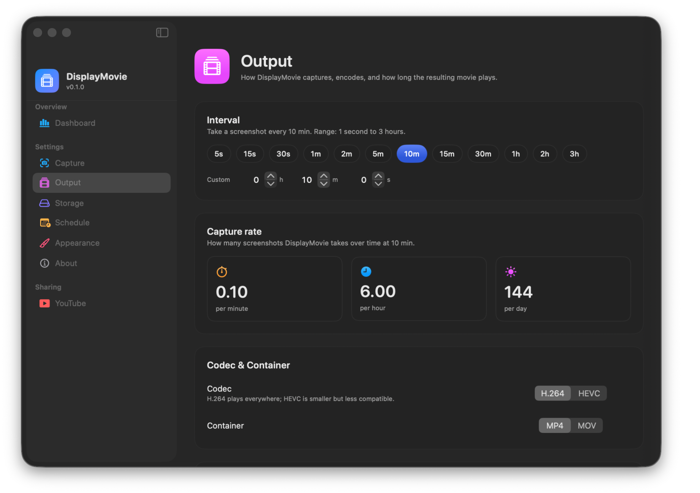
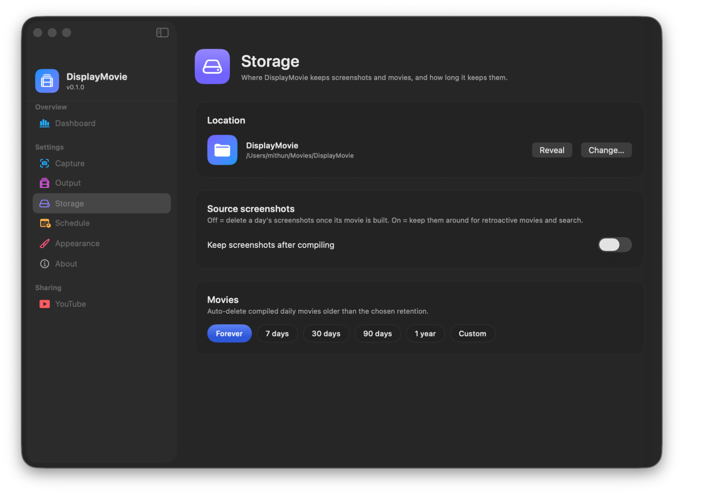
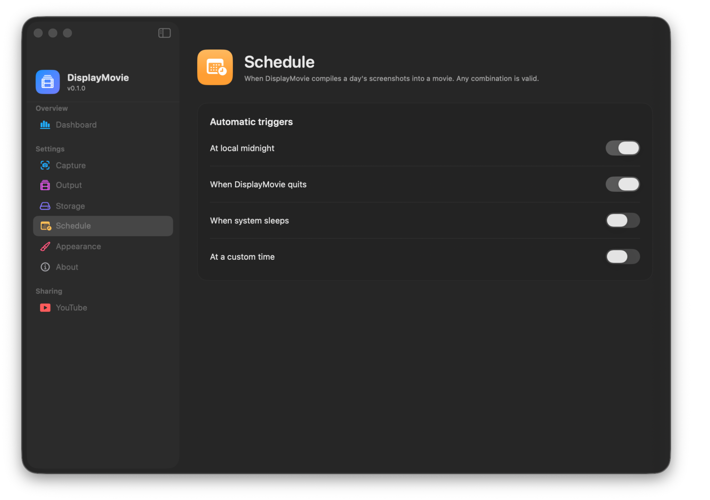
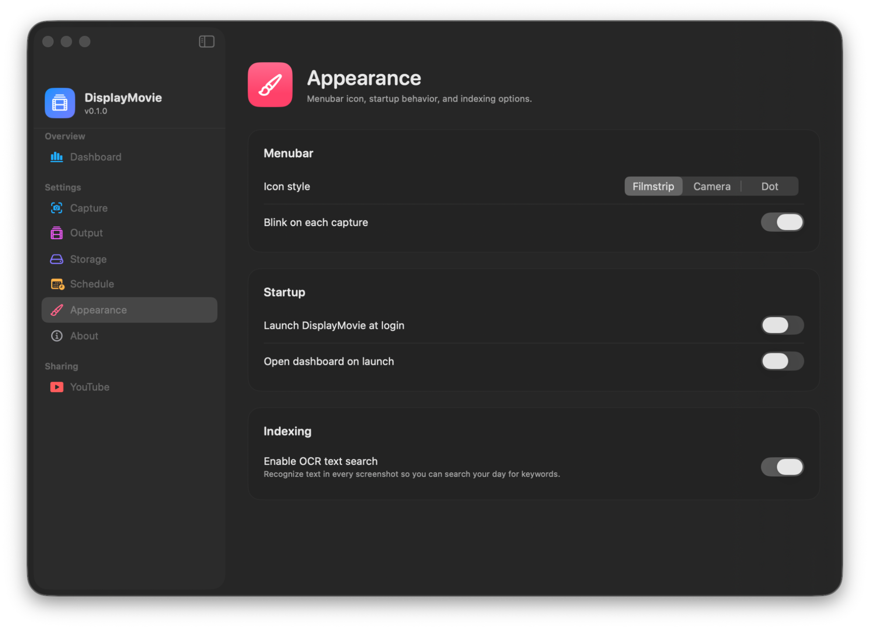
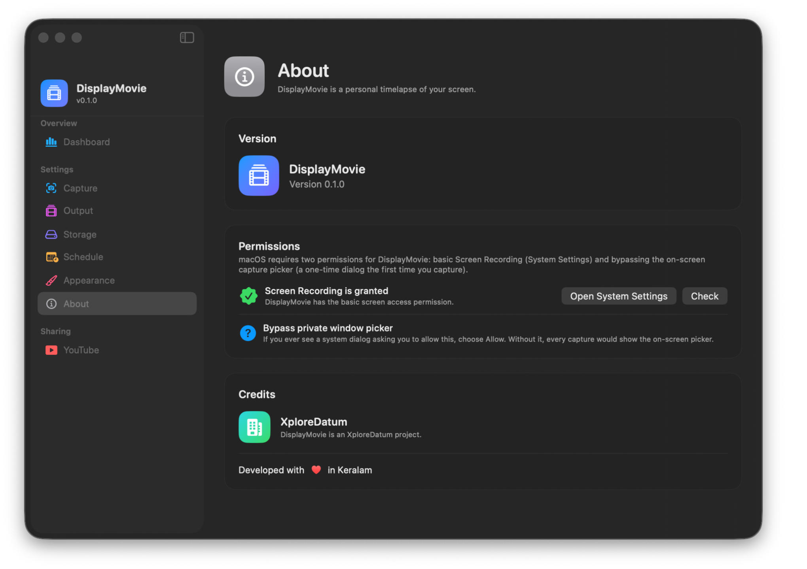
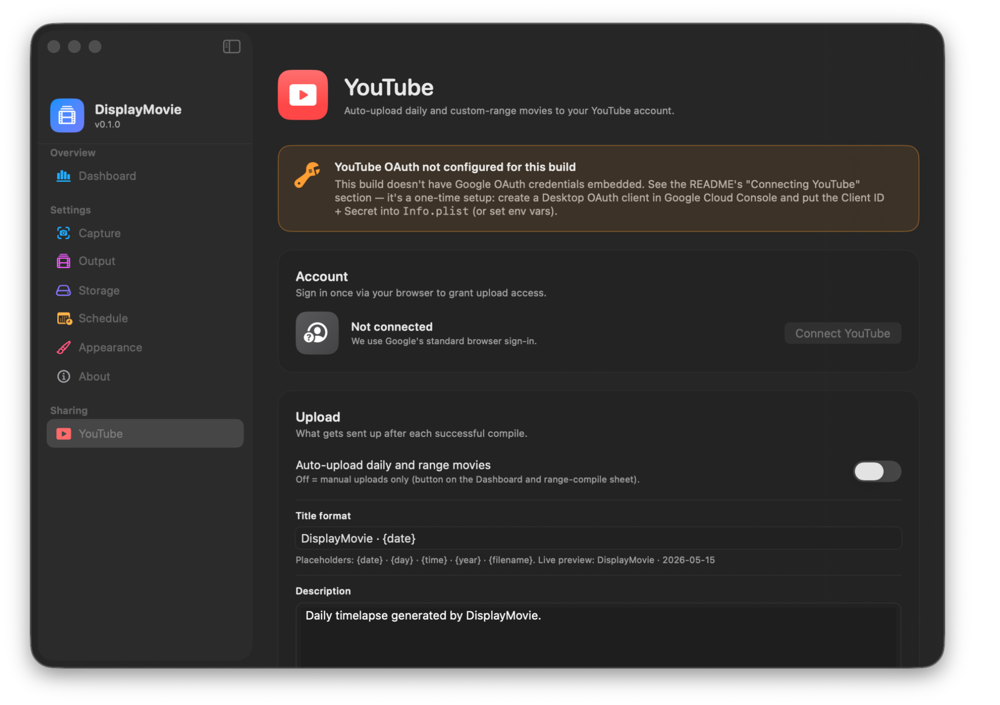

v0.1.0 · macOS 14+ · Apple Silicon
Every day,
a movie.
DisplayMovie quietly captures your Mac on your interval, drops idle frames, and stitches the rest into a daily timelapse. Watch it. Search it. Ship it.

— Tour
Every surface, in one window.
A single sidebar holds the Dashboard and seven Settings sections. macOS 26 Liquid-Glass throughout. Click the menubar icon, pick a section, that's the whole app.






— How it works
Four moving parts. One quiet film.
-
01
Capture
Every 1 second to 3 hours, a silent screenshot via ScreenCaptureKit. Multi-display composited preserving arrangement.
captureIntervalSeconds: 300 -
02
Dedupe
Each frame SHA-256 hashed against the previous. Pixel-identical → dropped. An untouched screen never costs you disk.
SHA256 ≡ skip -
03
Compile
At midnight, on quit, on sleep, or a custom time, the day's unique frames stitch into a single MP4 via AVFoundation.
AVAssetWriter → mp4 -
04
Share
OCR-search visible text. Build a movie from any date range. Auto-upload to YouTube with your chosen title format.
Vision · FTS5 · YouTube API
— Privacy
Your screen never leaves your Mac.
No telemetry. No analytics. OCR runs locally via Apple Vision. The metadata DB lives in your storage folder. Movies live where you put them. The only network call DisplayMovie ever makes is to YouTube — and only if you explicitly connect.
Local OCR via Vision
Local SQLite + FTS5
Refresh token in Keychain
Source on GitHub
— Download
Get DisplayMovie.
Signed and notarized for macOS Gatekeeper. Apple Silicon.
Download .dmgv0.1.0 · Apple Silicon · ≈ 12 MB
- Requires
- macOS 14 Sonoma or later
- Architecture
- Apple Silicon (arm64)
- Permissions
- Screen Recording
- License
- Proprietary © XploreDatum
— FAQ
Quick answers.
Does it slow my Mac down?
Captures take a few hundred milliseconds via ScreenCaptureKit on your chosen interval. The default 5-minute cadence is undetectable in practice. SHA-256 over a Retina frame is < 100 ms on Apple Silicon.
How much disk space?
Retina PNGs run 1–5 MB each. At 5-min intervals over an 8-hour day, expect ~300–500 MB before dedupe. With Keep Screenshots After Compile off, the day's PNGs are deleted once the MP4 is built.
Why two permission prompts on first launch?
macOS gates screen recording twice — a coarse "Screen Recording" toggle in System Settings, plus a per-app dialog asking to "bypass the system picker". The wizard surfaces both inline so they're not a surprise later.
What about Intel Macs?
Currently Apple Silicon only. The codebase compiles for x86_64 but ScreenCaptureKit's performance characteristics on Intel haven't been tuned, so we don't want to ship that build yet.
Other upload targets?
Only YouTube in v1. The architecture is generic — Vimeo or self-hosted upload is a single new file.
Is it open source?
The release artifacts and this site are public at XploreDatum/DisplayMovie-releases. App source is currently private while we polish v1.